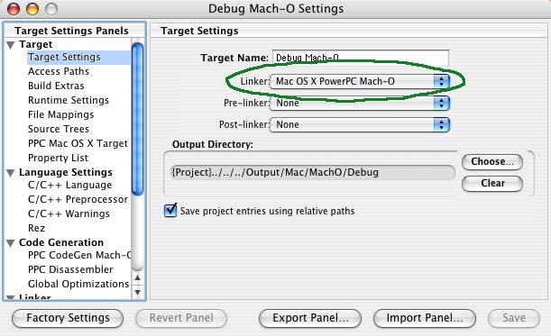
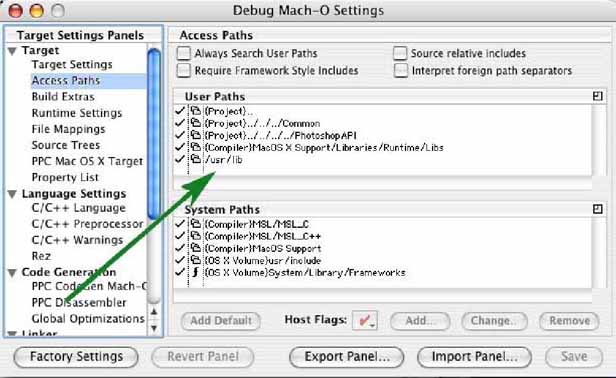
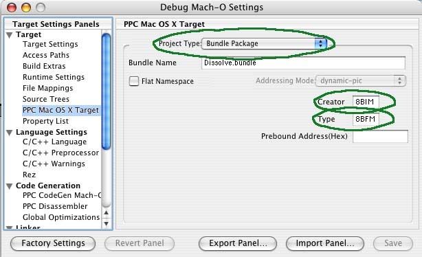
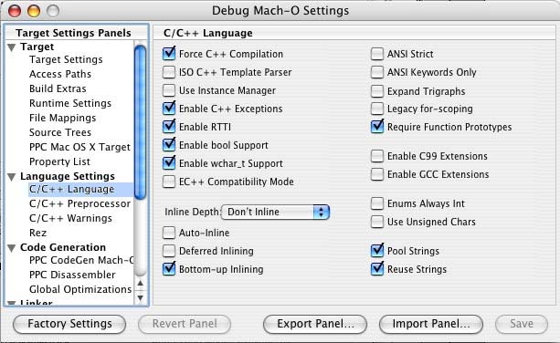
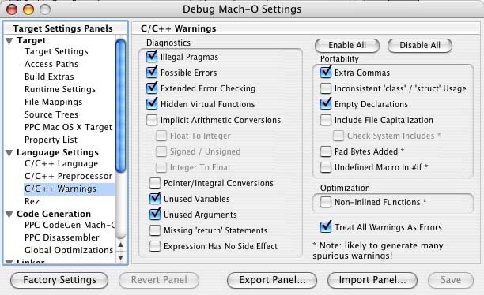
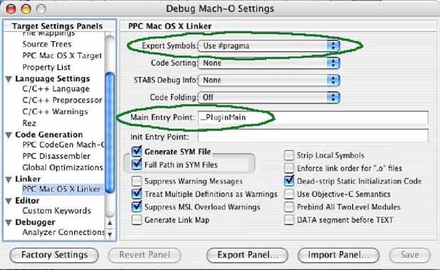

|
|
Adobe Photoshop SDK |
|
Conversion plug-ins to Mach-O binary format for Mac OSThis document describes the process for moving your PEF based Photoshop plug-in to Mach-O binary format.For more information on this topic, please see the documentation found on the Apple web site: http://developer.apple.com RequirementsThe required development environment for this conversion is Metrowerks CodeWarrior (CW) 9.2. http://www.metroworks.comYou will also need the Apple OS X SDK installed. http://www.apple.com The first step is auto converting your current project to the CW 9.2 project format. This is done by opening your project in CW 9.2 and responding 'Convert' to the convert dialog box that appears. Change Your Project Settings






PIMachODebug.h, PIMachORelease.h, PIPEFDebug.h, PIPEFRelease.h, PIRezMachO.h, PIRezPEF.h
Modify your PiPL selectorThe new CodeMachOPowerPC PiPL entry must be added to your PiPL resource. Here is the Dissolve sample:
#ifdef __PIWin__ CodeWin32X86 { "PluginMain" }, #else #ifdef BUILDING_FOR_MACH CodeMachOPowerPC { 0, 0, "PluginMain" }, #else CodeCarbonPowerPC { 0, 0, "" }, #endif #endif Libraries for Mach-OPEF required the following system libraries. Remove them.MSL_C_Carbon.lib MSL_C++_Carbon.lib MSL_Runtime_PPC.Lib CarbonLib console.stubs.c Mach-O uses the following libraries. Add these: Frameworks for Mach-OSelect the Frameworks tab. Right click in the window and select “Add files...” Navigate to “System/Library/Frameworks” and add the “Carbon.framework” and “System.framework”.Compile, Link and Test |